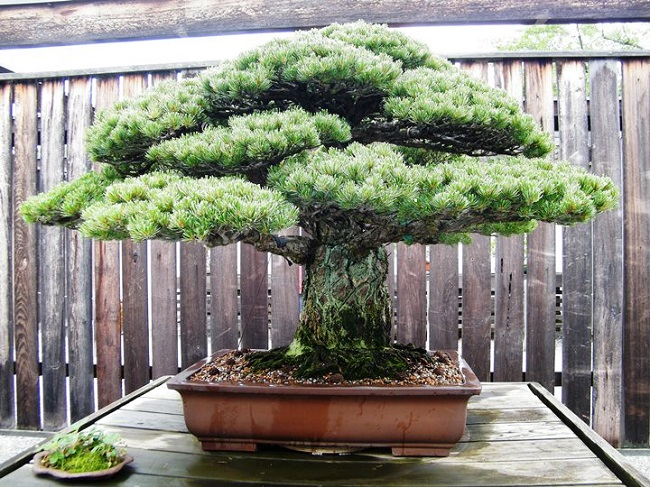
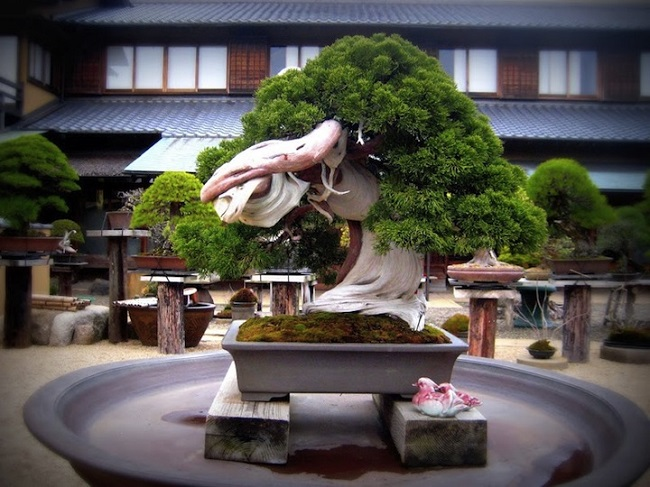
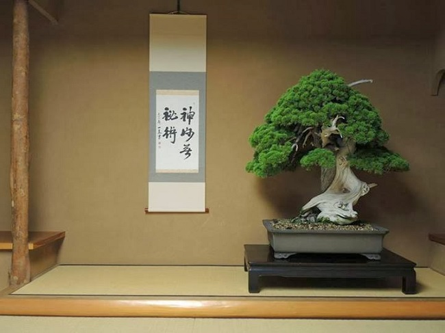
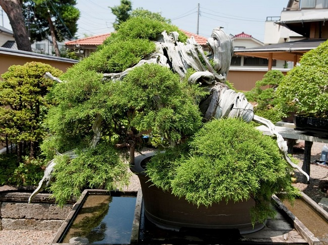
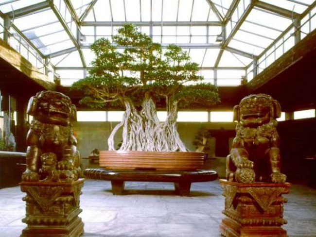

Самый Старый Бонсай
Несмотря на то, что бонсай чаще всего ассоциируют с Японией, практика выращивание карликовых деревьев возникла в Китае. Она приобрела вид искусства в 700 г н.э., а к 1333 году нашей эры бонсай появился в Японии. Японцы изучили китайские методы, усовершенствовали их и разработали новые способы выращивания бонсай.
Требуются годы усердного обучения, чтобы познать искусство бонсай в совершенстве. Карликовые деревья формируются и доводятся до идеала десятилетиями. В некоторых случаях деревья делают чахлыми, чтобы добиться нужного эффекта, они чрезвычайно уязвимы и требуют особого внимания. Многолетние экземпляры бонсай бесценны, их лелеют как семейные реликвии и содержат в музеях и частных коллекциях.
Полагают, что самому старому из ныне живущих бонсай более 1000 лет. Невозможно точно определить возраст дерева не повредив его, поэтому полагаются на исторические записи в которых указаны вид деревьев их стиль и форма. К тому же, многие из наиболее уникальных бонсай находятся в частных коллекциях и не доступны широкому кругу людей.
5. Японская белая сосна, пережившая ядерную бомбардировку Хиросимы
Это дерево, которое формировалось в качестве бонсай на протяжении почти 400 лет, является результатом терпеливой и напряженной работы семьи Ямаки. Особенность ему придает то, что оно находилось в Хиросиме, в тот момент, когда в 1945 году на город была сброшена атомная бомба. Однако, дерево выжило и впоследствии было передано в дар Национальному музею бонсая и пенчин в Вашингтоне (изображение предоставлено музеем).
4. 800-летний бонсай, также находящийся в Шунка-эн
Замечательное дерево, славящееся своим чрезвычайно старым возрастом. Считается, что ему более 800 лет и оно является одним из самых дорогих в мире! Его владелец - мастер Кобаяши - один из самых известных художников бонсай в мире, четыре раза получивший престижную награду премьер-министра Японии. Его питомник, Шунка-эн, расположен в Токио и открыт для посещения.
3. 800-летнее дерево в музее/питомнике Шунка-эн г-на Куньо Кобаяси
Потрясающее дерево, выставленное в Шунка-эн, возраст которого оценивается в 800 лет.
2. Старый бонсай из можжевельника в питомнике Мансей-эн (Япония). Результаты исследований подтвердили, что его возраст составляет более 1000 лет!
Подтвержденный возраст этого можжевельника, выкопанного в природе в Японии, составляет более 1000 лет. В настоящее время он представляет из себя скорее материал для будущего бонсай, находящегося на стадии формирования. Он принадлежит питомнику Мансей-эн в городе Омийя (Япония), принадлежащему семье Като . Фото Мортена Альбека.
1. Фикус из музея бонсай семьи Креспи (Италия) – возраст свыше 1000 лет!
Этот замечательный китайский пейзаж является частью коллекции Мэн Лунга в Гонконге. Насаждение Сагереции Чайной (Sageretia Theezans), которые вместе составляют очень реалистический пейзаж. Деревья, скала и миниатюрные статуэтки помещены в низкий прямоугольный горшок (сделанный из мрамора), который в свою очередь размещен на старинном столе.